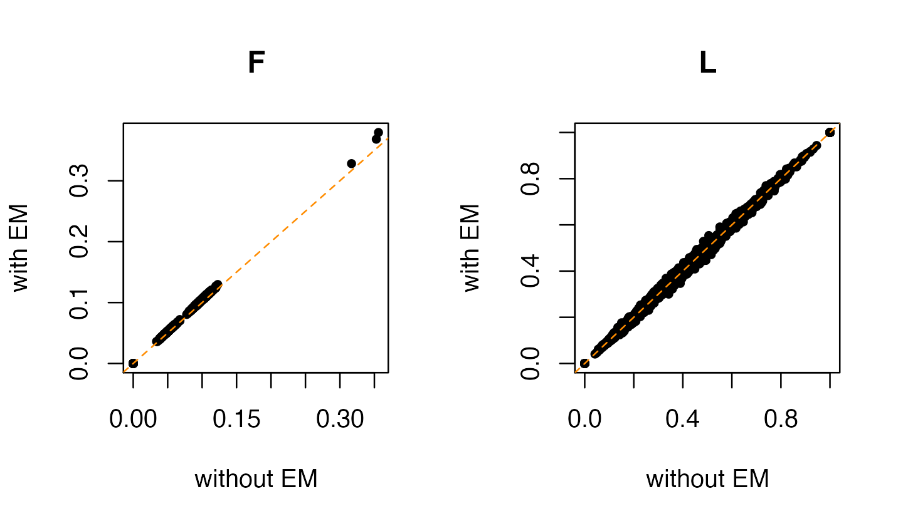
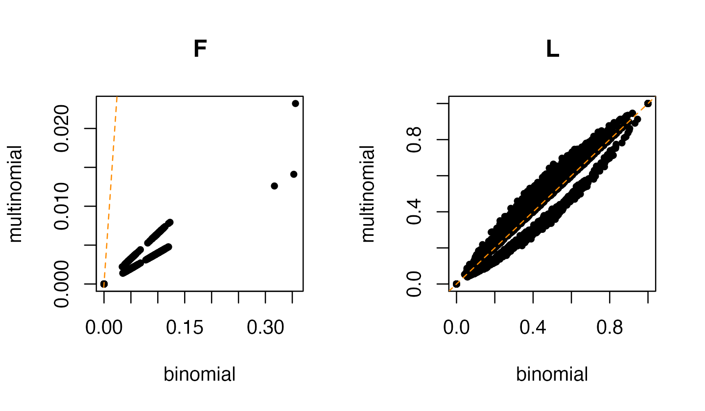
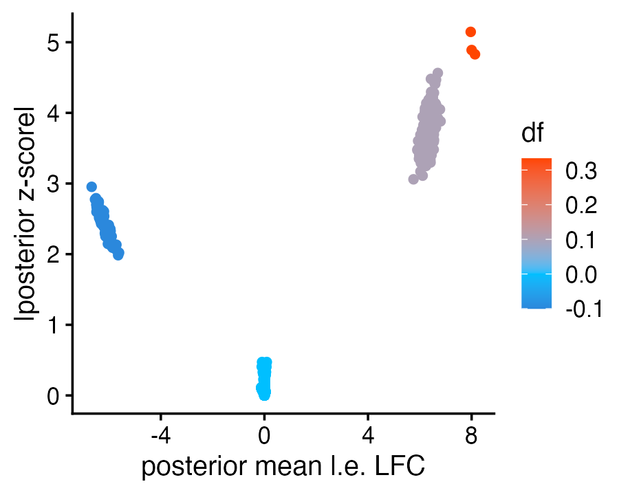
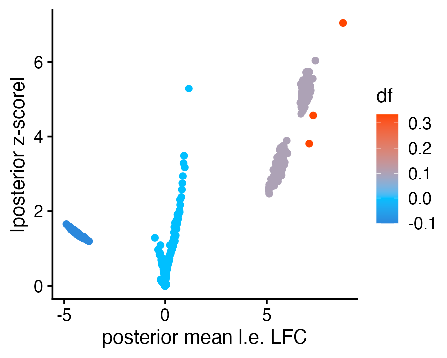

vignettes/binom_topic_model.Rmd
binom_topic_model.RmdIn this vignette, we show that fastTopics can be used to efficiently fit a binomial topic model for binary data—by “binary data”, we mean an \(n \times m\) binary data matrix \({\bf X}\) with entries \(x_{ij} \in \{0, 1\}\).
The binomial topic model is \[ x_{ij} \sim \mathrm{Binom}(1,\pi_{ij}), \] in which each binomial probability \(\pi_{ij}\) is a linear combination of the parameters \(f_{jk}, l_{ik}\), \[ \pi_{ij} = \sum_{k=1}^K l_{ik} f_{jk}, \] such that \(l_{ik}\) is the proportion of row \(i\) attributed to topic \(k\), and \(f_{jk}\) is the frequency of ones in column \(j\) and topic \(k\).
In fastTopics, this binomial model is approximated by a Poisson non-negative matrix factorization (NMF). That is, we make the following approximation: \[ \mathrm{Binom}(1,\pi_{ij}) \approx \mathrm{Pois}(\pi_{ij}) \] This approximation will be good whenever the sample size is large and the binomial probabilities are small. We illustrate this idea in the example below.
Load the packages and set the seed so the results can be reproduced.
Simulate a 4,000 x 503 (sparse) binary matrix from a binomial topic model with 3 topics.
set.seed(1)
n <- 1000
m <- 100
L <- rbind(cbind(rep(1,n),rep(0,n),rep(0,n)),
cbind(rep(0,n),rep(1,n),rep(0,n)),
cbind(rep(0,n),rep(0,n),rep(1,n)),
cbind(runif(n),runif(n),runif(n)))
L <- L/rowSums(L)
F <- rbind(diag(3)/3,
cbind(c(rep(0.1,m),rep(0.1,m),rep(0.05,m),rep(0.0,m),rep(0.0,m)),
c(rep(0.0,m),rep(0.0,m),rep(0.05,m),rep(0.1,m),rep(0.0,m)),
c(rep(0.1,m),rep(0.0,m),rep(0.05,m),rep(0.0,m),rep(0.1,m))))
P <- L %*% t(F)
n <- nrow(P)
m <- ncol(P)
X <- matrix(rbinom(n*m,1,P),n,m)
X <- as(X,"dgCMatrix")
sim <- list(L = L,F = F,X = X)
mean(X)
# [1] 0.04355716Fit a Poisson NMF model to the binomial data. To simplify comparison with the true factorization, we “cheat” here and initialize to the true parameter values.
fit_pois <- init_poisson_nmf(X,L = L,F = F)
fit_pois <- fit_poisson_nmf(X,fit0 = fit_pois,
control = list(extrapolate = TRUE),
verbose = "none")Convert the Poisson NMF to a binomial topic model without any EM updates to refine the fit. (This step involves a simple rescaling of L and F, and should be very fast.)
fit_binom <- poisson2binom(X,fit_pois,numem = 0)Perform the conversion a second time, this time with some EM updates to refine the fit.
fit_binom_em <- poisson2binom(X,fit_pois,numem = 20)The EM updates for fitting the binomial topic model can be very slow for large matrices so we would like to avoid running the EM updates if we can. Since the binomial probabilitiies are small and the sample size is large in this example, the Poisson NMF model parameters should closely approximate the binomial topic model parameters. Indeed, this is the case:
par(mfrow = c(1,2))
plot(fit_binom_em$F,fit_binom$F,pch = 20,xlab = "without EM",
ylab = "with EM",main = "F")
abline(a = 0,b = 1,col = "darkorange",lty = "dashed")
plot(fit_binom_em$L,fit_binom$L,pch = 20,xlab = "without EM",
ylab = "with EM",main = "L")
abline(a = 0,b = 1,col = "darkorange",lty = "dashed")
One might be tempted to fit the standard (multinomial) topic model to these data,
fit_multinom <- poisson2multinom(fit_pois)but this results in estimates that are quite different from the binomial topic model:
par(mfrow = c(1,2))
plot(fit_binom_em$F,fit_multinom$F,pch = 20,
xlab = "binomial",ylab = "multinomial",main = "F")
abline(a = 0,b = 1,col = "darkorange",lty = "dashed")
plot(fit_binom_em$L,fit_multinom$L,pch = 20,
xlab = "binomial",ylab = "multinomial",main = "L")
abline(a = 0,b = 1,col = "darkorange",lty = "dashed")
This suggests that using the multinomial topic model is the wrong thing to do if the data are indeed binomial.
We can also perform a grade-of-membership (GoM) differential expression analysis, which is similiarly based on a Poisson approximation to the binomial:
de_binom <- de_analysis(fit_binom_em,X,control = list(nc = 4,ns = 1e4))Plot posterior mean l.e. LFC vs. z-score, coloring the points by the “true” change (“df”) in order to show visually that the GoM DE analysis is effective capturing the largest changes:
df <- sim$F - apply(sim$F,1,function (x) sort(x,decreasing = TRUE)[2])
p <- qplot(x = de_binom$postmean,y = abs(de_binom$z),color = df) +
scale_color_gradient2(low = "darkblue",mid = "deepskyblue",
high = "orangered",midpoint = 0) +
labs(x = "posterior mean l.e. LFC",
y = "|posterior z-score|") +
theme_cowplot(font_size = 12)
print(p)
Again, to underscore that using the multinomial topic model may not be a good idea when the data are binomial, a GoM DE analysis based on the multinomial topic model does not distinguish as effectively the large changes from the zero/near-zero changes:
de_multinom <- de_analysis(fit_multinom,X,control = list(nc = 4,ns = 1e4))
# Using 4 RcppParallel threads.
p2 <- qplot(x = de_multinom$postmean,y = abs(de_multinom$z),color = df) +
scale_color_gradient2(low = "darkblue",mid = "deepskyblue",
high = "orangered",midpoint = 0) +
labs(x = "posterior mean l.e. LFC",
y = "|posterior z-score|") +
theme_cowplot(font_size = 12)
print(p2)